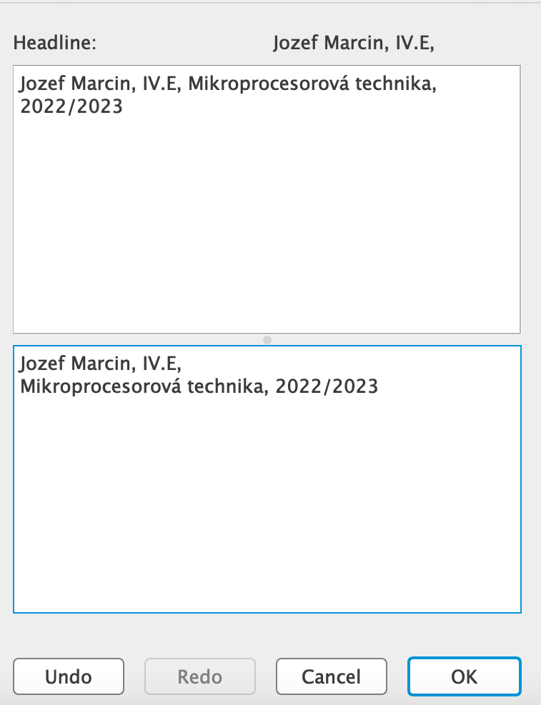
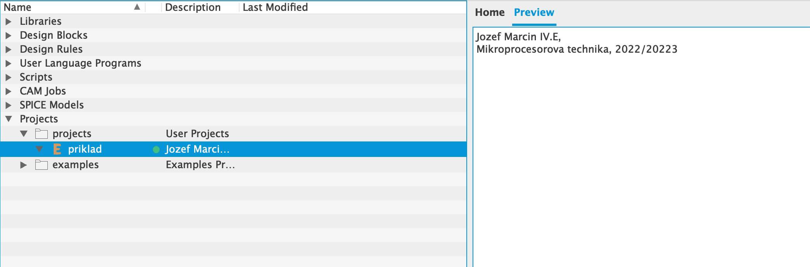

Založenie pracovného adresára s menom žiaka
Vytvoriť si adresár Eagle vo svojom adresári.
Spustiť program Eagle, Control Panel.
Options/Directories... - nastavte kurzor do príslušného riadku (Projekts) a cez Browse vyhľadajte váš príslušný adresár, napr. C:\Users\"Meno Použivateľa"\"Meno Priečinku"/Eagle a potvrďte OK.
 Potom kliknutím pravým tlačidlom myši na priečinok Eagle v CP sa otvorí kontextové menu, ktoré umožní okrem iného aj Edit Description - pre editáciu popisu. Je vhodné vypísať (v spodnej polovici okna) podobne podľa uvedeného vzoru, keďže projekt si môžu vytvoriť viacerí žiaci z rôznych tried.
Potom kliknutím pravým tlačidlom myši na priečinok Eagle v CP sa otvorí kontextové menu, ktoré umožní okrem iného aj Edit Description - pre editáciu popisu. Je vhodné vypísať (v spodnej polovici okna) podobne podľa uvedeného vzoru, keďže projekt si môžu vytvoriť viacerí žiaci z rôznych tried.

Skôr, ako začnete kresliť novú schému, vytvorte si vo svojom priečinku napr. Eagle PTM - nový projekt - New Project (napr. Usmernovac)
Využite kontextové menu PTM pre otvorený projekt (projekt je otvorený, ak symbol krúžku je ; ak je , je potrebné naň ešte raz kliknúť) a znovu je výhodné opísať cez PTM Edit Description → podrobnejšie údaje o našom projekte.

Potom vyberte PTM voľbu New/Schematic. Otvorí sa editor schém.
©2023 Goldmann. All Rights Reserved.
Stredná priemyselná škola dopravná
Košice